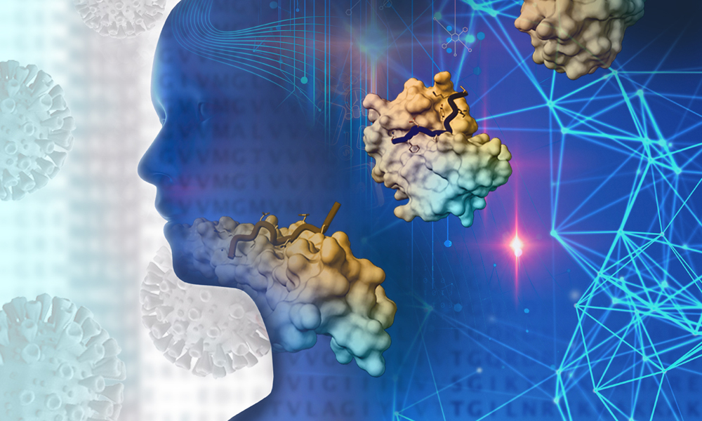

In addition to the main track, the conference will provide for a number of special sessions focused on specific scientific subjects.
The submission of the special session proposals is currently open and the deadline for the proposals submissions is 15 July 2021 31 July 2021.
See the calls webpage for more information.
The following list contains the accepted special sessions so far.
Artificial intelligence and statistical methods for neurodegenerative diseases
Aims and scope.
Neurodegenerative diseases, although with different disease courses, are characterized by progressive or alternate impairment involving the functions of the nervous system. Artificial intelligence solutions might provide useful insights on disease aetiology, progression, and phenotypes, to support clinical decision and enhance the quality of medical assistance and homecare. The increasing amount and variety of collected data (clinical, -omics, imaging, sensors) constitute a basis for innovative ways to study and analyze neurodegenerative diseases, both at
population and single-patient levels.
The ability to predict or simulate disease course, risk or timing of adverse events, exacerbation and relapses allows to personalize a patient’s treatment plan or otherwise inform their personal decisions, for example with respect to end-of-life care. Moreover, one of the biggest challenges of these diseases is to decipher their possible heterogeneity among patients, who may display widely different patterns of disease manifestation and progression.
Thus, successfully identifying clinically meaningful sub-groups of patients (that is, patients’ stratification) would be of great value for advancing the development of effective treatments and achieving better care for patients.
Our special session aims at fostering the synergistic interaction between advanced artificial intelligence and statistical methods and clinical research in neurodegenerative diseases.
Topics of interest include:
Artificial intelligence, machine learning, Bayesian and statistical methods, big data analytics
Computational approaches for patient stratification, prognosis or onset prediction
Data mining, process mining, information retrieval, temporal and spatial representation and reasoning
Simulation models, software, and tools (clinical decision support systems, patient engagement support, visual analytics, solutions for assisted living, and telemedicine)
Genetics, -omics, and environmental data analysis
Clinical image analysis, signal processing, natural language processing
Explainable AI and model interpretation
With applications to neurodegenerative diseases, including:
Motor neuron diseases, such as amyotrophic lateral sclerosis (ALS), spinal muscular atrophy (SMA)
Multiple sclerosis (MS)
Alzheimer’s disease and other dementias
Parkinson’s disease
Prion disease
Huntington’s disease
Other chronic or degenerative neurological conditions
Special session organizers:
*Erica Tavazzi, Università di Padova, Italy
*Martina Vettoretti, Università di Padova, Italy
*Enrico Longato, Università di Padova, Italy
*corresponding organizers: cibb.sysbiobig(AT)dei.unipd.it
The organizers of this special session are members of the Horizon 2020 BRAINTEASER consortium.
Modeling and simulation methods for computational biology and systems medicine

Aim and scope.
Computational biology deals with the analysis of biological systems at different scales of complexity, using proper modeling frameworks and computational methods. Given that Computational biology approaches and modelling systems are becoming well established, the challenge is now to apply the developed techniques towards the definition of personalized models to identify individually tailored drugs and therapies, that is to realize the personalized medicine paradigm. The scope of this special session is to bring together researchers involved in the development of methods and models applied to the fields of computational biology and systems medicine.
Topics of interest include
Biomedical model parameterization and verification
Models of neural activity
Individual-aware models to assess genetic variation effects on cellular regulatory network
Cancer progression models
Epidemiological models
Multiscale modeling and simulation of biological systems
Space-temporal modeling and simulation of biological systems
Robustness of cellular networks
Emergent properties in complex biological systems
Metabolic and signal pathway analysis and engineering
Genetic variants effects on epigenome
Models for personalized and targeted therapies
Patients classification and stratification
Drug combination, repositioning and recommendation for personalized medicine
Integration of clinical data to system biology models
Special session organizers:
Marco Beccuti, Università di Torino, Italy
Rosalba Giugno, Università di Verona, Italy
Vincenzo Bonnici, Università di Verona, Italy
*Manuel Tognon, Università di Verona, Italy
*Simone Avesani, Università di Verona, Italy
Paolo Cazzaniga, Università di Bergamo, Italy
Marco Nobile, Technische Universiteit Eindhoven, Netherlands
Marzio Pennisi, Università del Piemonte Orientale, Italy
*corresponding organizers: manuel.tognon(AT)univr.it and simone.avesani(AT)univr.it
Towards standardizing machine learning in life sciences: the FAIR principles and the DOME recommendations
Aims and scope
With the steep decline in the cost of many high-throughput technologies, large amounts of biological data are being generated and made accessible to researchers. Machine learning (ML) has been brought into the spotlight as a very useful approach to understand and retrieve insights from big biodata (molecular and otherwise) with the potential to result in ground-breaking medical applications. This is clearly reflected in the corresponding growth of ML publications, reporting a wide range of modelling techniques in biology.
There are opportunities to advance Machine Learning research and development, and increase the benefit of Machine Learning to science by improving the reusability of science data and ML models and through the development of methodologies and services to seamlessly and routinely integrate AI into science workflows. In this context, there is a large amount of focus on implementing the FAIR principles (Findable, Accessible, interoperable and reproducible), both in ELIXIR, Research Data Alliance (RDA) and elsewhere, initially focused on data and now software and other products but generally not ML models.
In the context of this special session, we will be discussing some key challenges, opportunities and achievements for Machine Learning, with a view towards Life Sciences.
Such topics include the DOME Recommendations (see the Nature Methods article and its preprint) and the FAIR for Machine Learning activities in Research Data Alliance.
Special session organizers:
Silvio C. E. Tosatto, Università di Padova, Italy
*Fotis E. Psomopoulos, Institute of Applied Biosciences at the Centre for Research and Technology Hellas, Greece
Jennifer Harrow, ELIXIR-Hub, England
*corresponding organizer: fpsom(AT)certh.gr
The organizers of this special session are members of the ELIXIR Machine Learning Focus Group.
Machine learning in healthcare informatics and medical biology
Aim and scope.
Machine learning has become a pivotal tool to analyze biomedical and biological datasets, especially in the Big Data era. In fact, machine learning algorithms can identify hidden relationships and structures in health care data, and even take advantage of them to make accurate predictions about similar or future data instances. For example, machine learning software has been able to predict the diagnosis of tumor patients just by processing patients' clinical features, allowing scientists to save time and money compared to wet lab experiments. Computational researchers have also exploited machine learning to infer knowledge about patients by analyzing biological datasets, especially the ones featuring genetics and epigenomic traits. Data mining approaches applied to such datasets, in fact, can lead to relevant discoveries both to understand molecular biology and to gain new knowledge about patients’ diseases.
Our special session on "Machine Learning in Healthcare Informatics and Medical Biology" aims at boosting these scientific fields, calling for researchers able to show the potential and the advance of machine learning algorithms to make accurate computational predictions in health care datasets and in patient-oriented biological datasets.
Topics of interest include:
Machine learning methods applied to health care and biomedical datasets
Machine learning methods applied to genetics and epigenomics datasets, to understand the conditions of healthy and/or sick patients
Machine learning methods applied to biological datasets to understand the underlying biomolecular scenario
Machine learning software and tools in the health care and biological domain
Statistical models to analyze health care, biomedical, and biological datasets
Data mining applications in the health care and biological domain
Special session organizers:
*Davide Chicco, University of Toronto, Canada
Giuseppe Jurman, Fondazione Bruno Kessler, Italy
João Ribeiro Pinto, Instituto de Engenharia de Sistemas e Computadores Tecnologia e Ciencia, Portugal
Giuseppe Agapito, Università Magna Graecia di Catanzaro, Italy
Abbas Alameer, Kuwait University, Kuwait
*corresponding organizer: davidechicco(AT)davidechicco.it
Image credits:
The first image is by Erica Tavazzi (CC BY-NC-ND 4.0).
The second photo illustration is by Rayne Zaayman-Gallant (CC BY-NC-ND 4.0).
The third photo illustration is by pxfuel.com (CC BY-NC-ND 4.0).
The forth photo illustration is by the Elixir Machine Learning Focus Group (copyright reserved).
The fifth photo illustration is by piqsels.com (CC0 1.0).